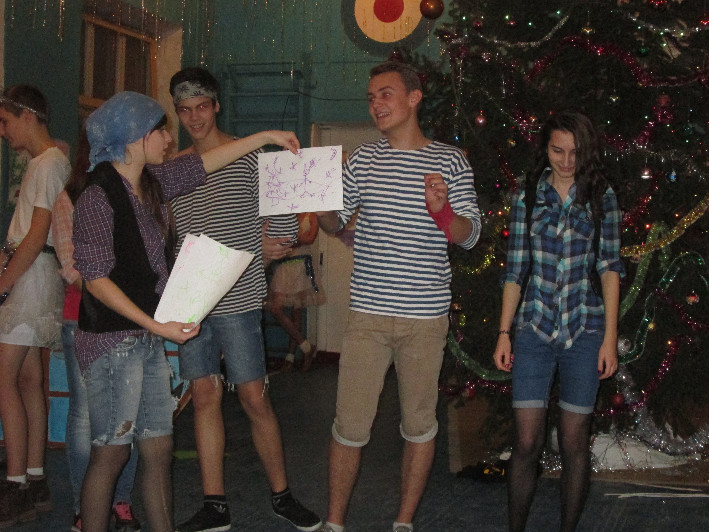
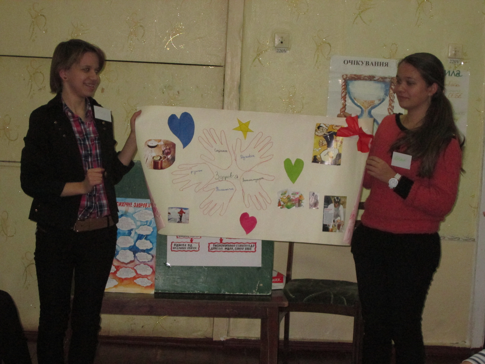

У музеї проводять заходи багато спектрового значення та знаходяться фото про участь школярів у шкільних та міських заходах
Музей історії школи є активним організтором заходів громадянсько-патріотичного спрямування та зберігає пам'ять про проведення багатьох традиційних свят і тематичних заходів:
Традиційні шкільні свята:
- Благодійні ярмарки: Зароблені кошти традиційно передавалися на допомогу інтернатам, а сьогодні — на підтримку волонтерських ініціатив.
- Військова гра «Зірниця» та інсценізація військової пісні: Патріотичне виховання молоді.
- Культурні свята: Українські вечорниці, фітовітальні, вистави шкільного драматичного гуртка.
- Фестиваль «Таланти твої, Україно!»: Щорічний огляд творчих здобутків учнів.
- Конкурси та змагання: «Міс Попелюшка», «Стартінейджер», спортивні свята «Козацькі розваги».

Новорічні свята

Психологічні тренінги